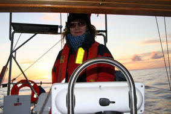
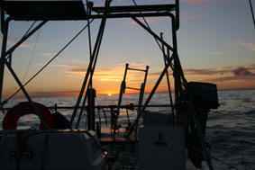
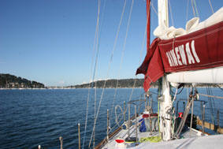
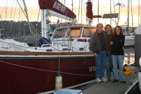

|
|
|
|
|
From Queenscliffe to Sydney
10th June 2007 - written by Peter
We think the last email was sent from Queenscliff, just at the bottom of Port Philip bay. Well, we ended up having almost a week stuck in Queenscliff waiting for the weather to clear, but it gave us a chance to do a few fixes on the boat.
The big one was trying to work out where the diesel tanks were leaking – we knew it must be from the top of the tanks because we’d never had a leak like that before, but then we’d never filled the tanks right up before.
We thought we’d identified the problem with the seals on the inspection hatches – fixing them meant dismantling a fair bit of the boat, but we replaced the seals and said to ourselves, wrongly, that’s a fair job done.
Hah, a good lesson was looming!
At last the weather relented and we could head off. Anxiously – we’d never been through the Heads (the very narrow entrance to Port Philip) before.
Slack water was at 08.30 so we were up at 05.30, doing the final stowing away down below and checks top side. We called up Lonsdale Light on Ch 16 around 7 to check what traffic was coming through the Heads then motored out, put the sails up, sailing back and forth waiting for the big ship Lonsdale had warned us about to pass.
 In the end, the Heads were easy – we’d waited for the right time with the tides and while we had a bit of a messy sea, it was a pretty straight forward passage. Once a couple of miles out, we turned east.
At first, all was grand – good wind from a good direction – Hinewai was steaming along. And within an hour we had the first group of dolphins playing around us. It carried on being grand until we passed Wilson’s Prom and hit “The Paddock”. Encompassing one of Australia’s gas fields, "The Paddock" is dotted with gas production platforms and the choice is through them inshore or around them off shore. The forecast weather suggested offshore was the way to go. Blah!
Bass Straight, between Victoria and Tassie, has a justified reputation of being one of the nastiest pieces of water in the world. The waves sweep across from the Southern Seas and then hit the continental shelf, funneling into the Straight. As they hit shallow water, they stand up and close up, and become responsive to the prevailing wind.
 We were fine until the front came through 12 hours earlier than forecast. This meant we found that the wind was on our nose, and piling the waves up. Instead of a comfortable reach through The Paddock, we found ourselves punching through some nasty short tall waves. It made for a miserable 24 hours.
Finally, we got round the corner, passing Gabo Island some 30 miles offshore with the aim of heading into Eden to top our fuel tanks up and grab some fresh supplies. But first, we were faced with a solid wall of massive thunderstorms so heaved to for six hours and watched the best light show ever.
After a quick stop in Eden, we headed north (at last). But the wind was dropping out and swinging round, right up our bum. We gave up trying hold sails up with the following seas constantly rolling us into, albeit gentle, Chinese gybes so ended up motoring (and rolling) our way towards Sydney.
The plan was to head straight on to Brisbane, but when we checked the weather on the radio around 2am on Wednesday, they were forecasting possible gales around the area we’d be in by the end of the week. We talked it through – there was a chance we could beat the weather by heading on, but we decided it wasn’t worth the risk. So we headed on to the Pittwater, north of Sydney, and sailed in circles for a while until it got light enough to come into the Bay and head down to the Royal Prince Alfred Yacht Club.
And just as well we did. A very nasty low developed a lot
quicker than forecast and it caused havoc – some of the
worst weather in 30 years. Heaps of damage, lots of 
And also learning a good lesson. We found we had loads of diesel in the bilge again. After a bit of investigation, we realized that another small plate of the top of the tanks was also leaking. Now we’ve never had those plates off and since we’d spotted that the seals around the inspection hatches were leaking, didn’t even think to check them. Big mistake – it took all day to clean the mess up again and then replace the seals on the small plates. Lesson learned – never assume that a problem only has one source.
The low’s now drifting out into the Tasman so we’ll be
heading off first thing in the

We’re slowly but surely slipping into the cruising life style, but so want to get north where it’s warmer. For most of the last couple of weeks we’ve been wearing a full set of thermals, a couple of pairs of trackie pants, two rugby tops and two fleecy tops under our wet weather gear. We just want to wear shorts again!
Oh well, to date we’ve done just on 500 nm, only another 3,500 to Darwin.
All the best
Jean & Peter
Next Log Page: From Sydney to Cairns
|
|
|
|
|
|
|
The Crew The Route The Yacht The Log Guestbook Links Contact Us |
|
|
|
|
|
Home |
|
|
All Original Content of this Web Site Copyright © 2000, 2001, 2002, 2003, 2004, 2005, 2006, 2007, 2008, 2009 Ocean Odyssey Pty Ltd |